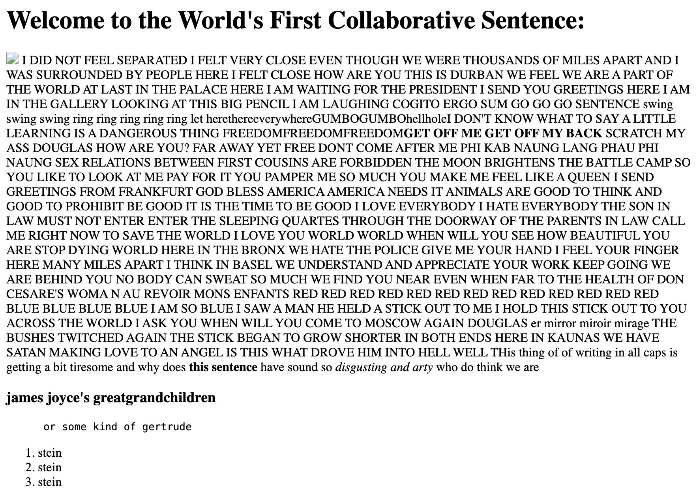
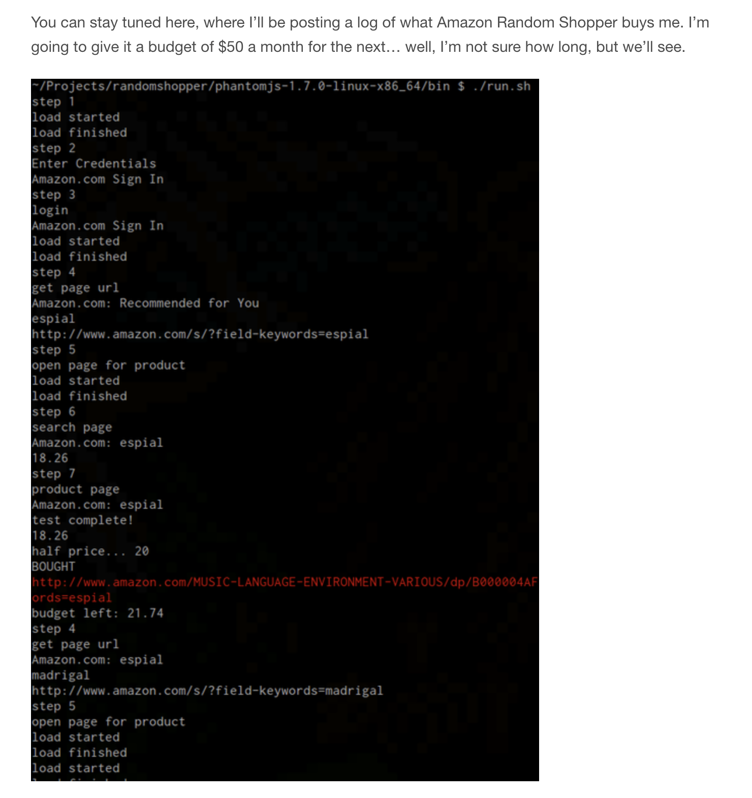
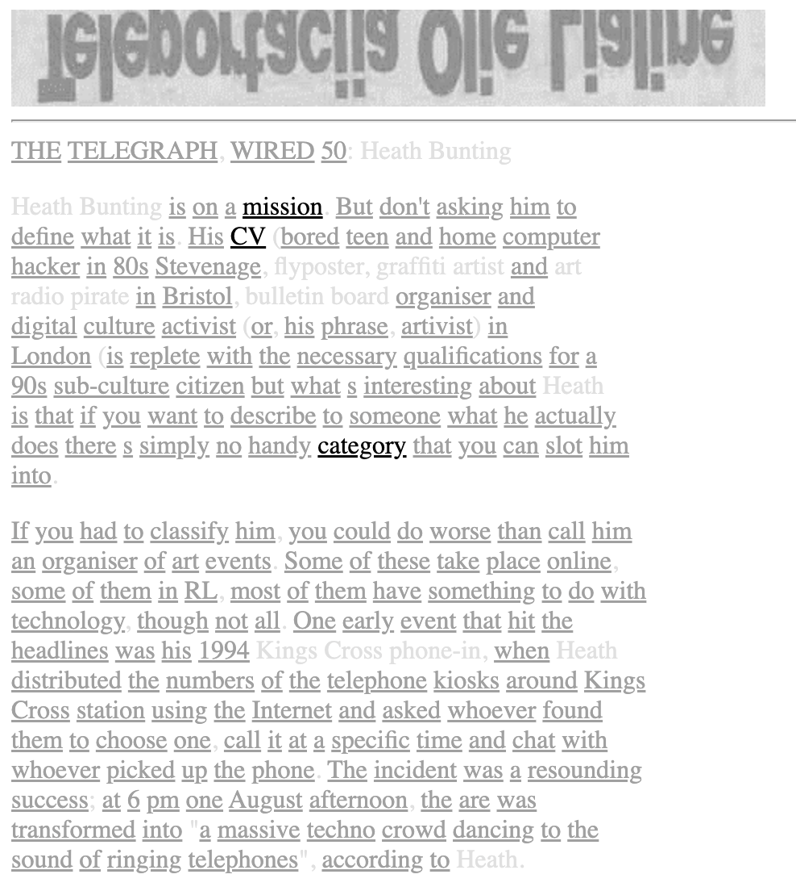
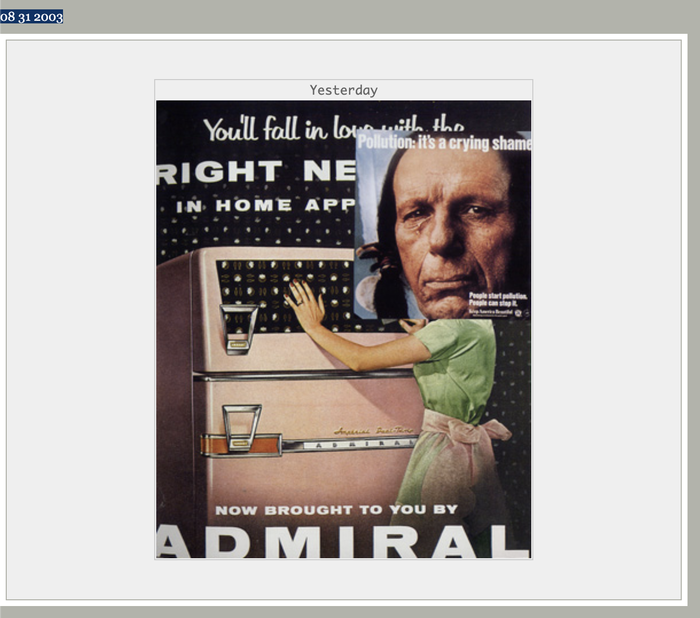

| Artists | Artworks | Thumbnail | Douglas Davis | The World's First Collaborative Sentence |  |
Joan Heemsertk and Dirk Paesmans | JODI; wwwwwwwww.jodi.org | |
Darius Kazemi | Random Shopper |  |
Heath Bunting | _readme.html |  |
Shirin Kouladjie | WWW.DAYSOFMYLIFE.ORG |  |
|---|